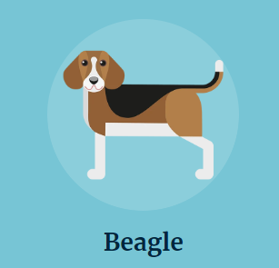
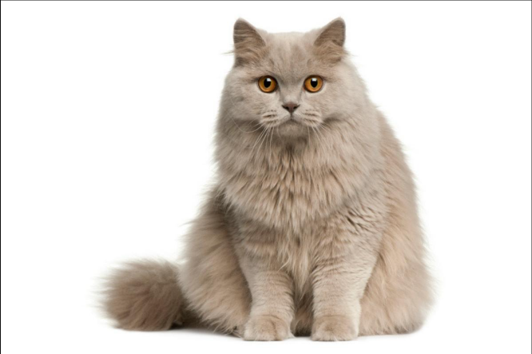

Medalla Pantano
Especies Animales
Existen gran variedad de animales en el mundo, en la siguiente lista se muestran 7 especies, de aves, perros y gatos con sus respectivas imagenes ilustrativas
7 especies de perros que existen en el mundo
- Dalmata
- Labrador
- Chihuaha
- Pitbull
- Beagle

- Bulldog
- Golden Retriever

7 especies de gatos que existen en el mundo
- Abisinio
- Bengala
- Azul Ruso
- Angora Turco
- Bosque de Noruega
- British Longhair

- Gato Siberiano
7 especies de aves que existen en el mundo
- Garrapatero Pijuy

- Cuclillo Pico Negro

- Carpintero del desierto
- Loro Tamaulipeco

- Guacamaya Verde

- Perico Monje Argentino

- Tecolote Barbudo